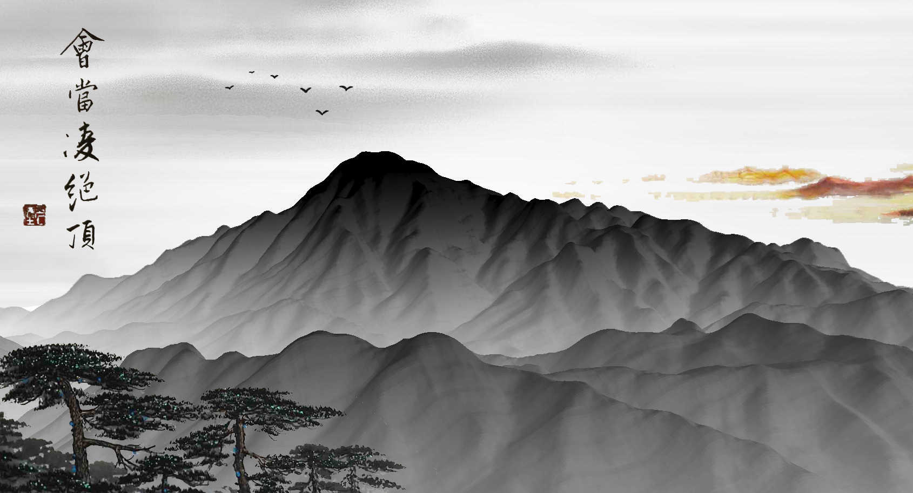
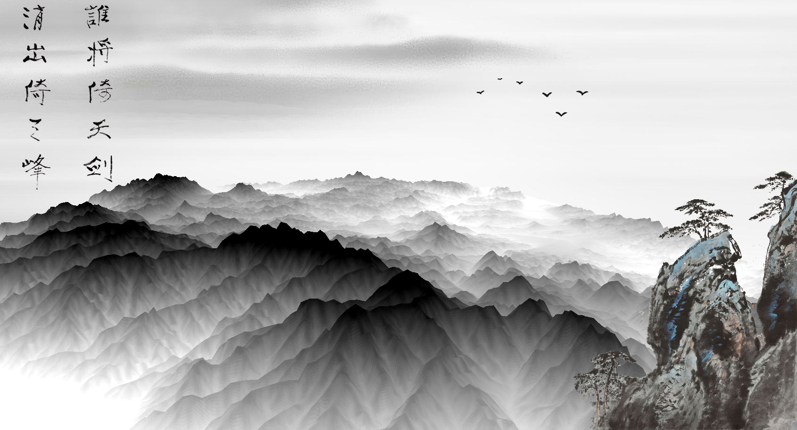
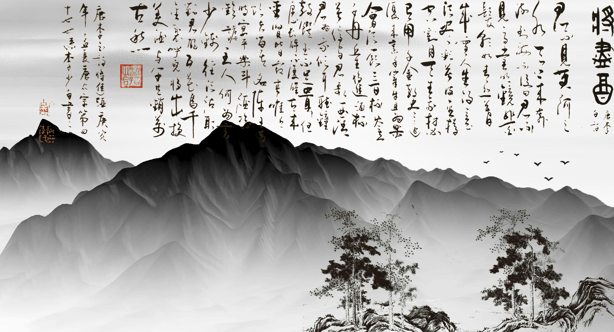
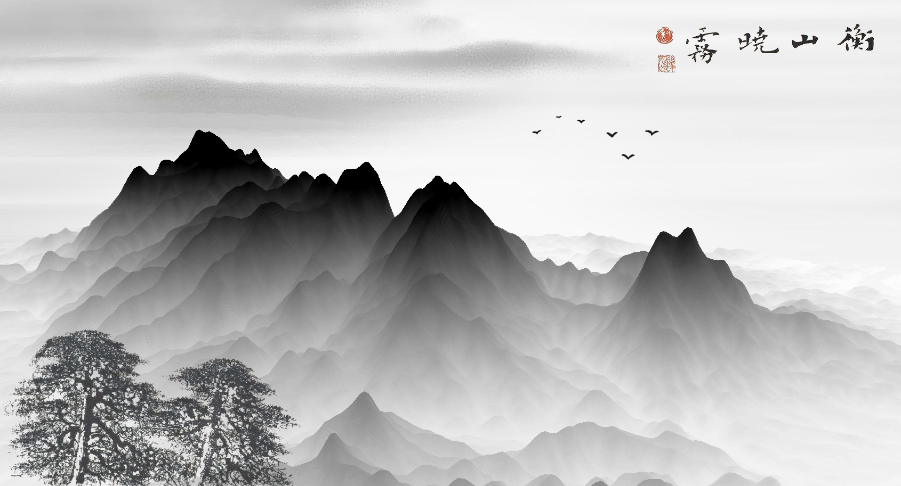
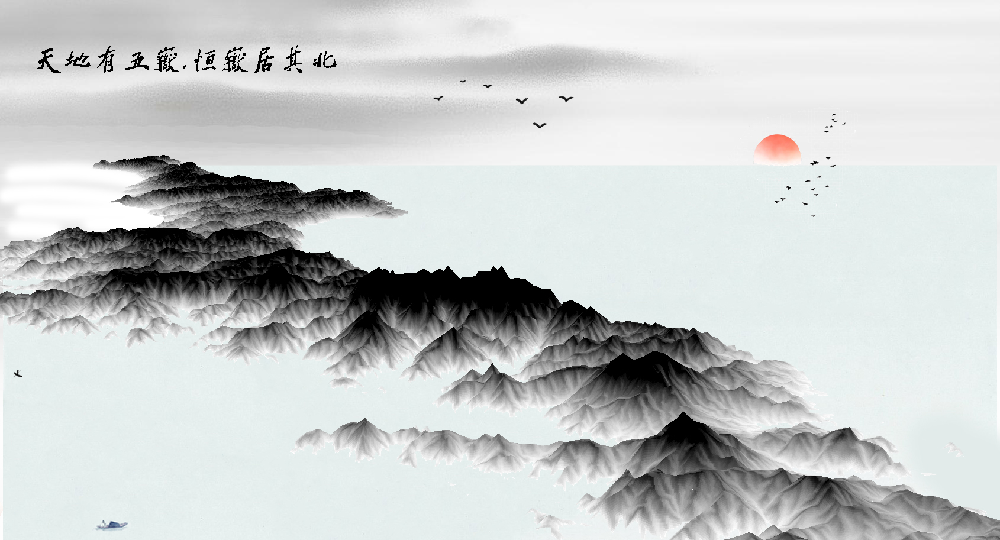
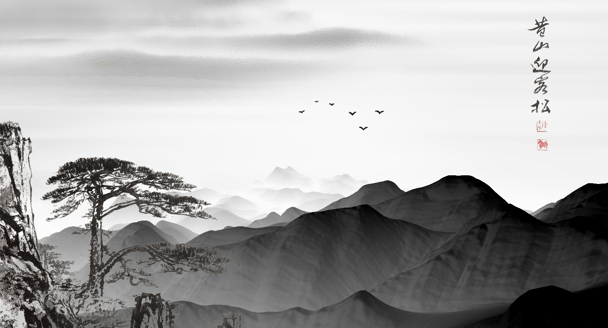

这一系列作品融合了中国传统水墨画风格与现代地图制图技术，以中国五岳为主题，展现了中华文化与地理信息科学的完美结合。该作品在2022年30DayMapChallenge的Day 30 - Remix类别中获得132个赞，排名第5位。

泰山 — 会当凌绝顶，一览众山小
以杜甫《望岳》中的著名诗句为灵感，展现泰山雄伟壮观的气势。

华山 — 谁将倚天剑，削出倚天峰
展现华山险峻如剑的特色地貌，气势磅礴。

嵩山 — 将进酒，杯莫停
以李白豪迈诗句表现嵩山的文化底蕴，融合武术与自然之美。

衡山 — 衡山晓雾
捕捉衡山晨雾缭绕的秀丽景观，展现南岳的灵秀之美。

恒山 — 天地有五岳，恒岳居其北
展现恒山作为北岳的雄浑与巍峨，高耸入云的壮观气势。

黄山 — 五岳归来不看山，黄山归来不看岳
展现黄山奇松、怪石、云海的神奇景观，独特的自然魅力。

落霞与孤鹜齐飞，秋水共长天一色
以王勃《滕王阁序》中的名句为灵感，描绘一幅中国山水的全景图，展现"落霞与孤鹜齐飞，秋水共长天一色"的壮美景象。
创作技术
- 数据处理：ArcGIS Pro、QGIS处理DEM数据
- 视觉设计：Adobe Illustrator、Photoshop结合中国传统水墨画技法
- 数据来源：中国国家基础地理信息中心、OpenStreetMap
创作理念
水墨丹青系列作品旨在通过现代地图技术与传统艺术表现手法的融合，展示中国自然地理的壮美景观，同时传递中华文化的深厚底蕴。作品力求在准确表达地理信息的基础上，注入诗意与美学，使科学与艺术相得益彰。
比赛成果
作品在30DayMapChallenge社区中获得广泛关注，不仅体现了地理信息技术的应用创新，也促进了中国传统文化在国际地图制图领域的传播。在Day 30 - Remix类别中获得132个赞，排名第5位。